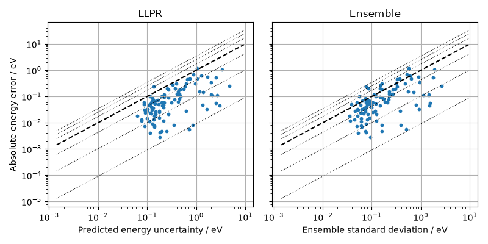
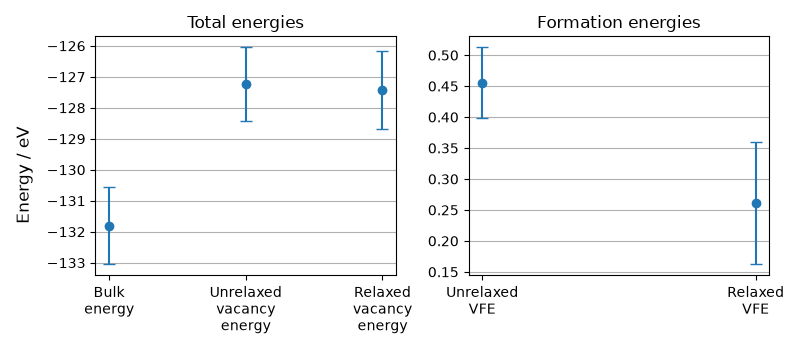
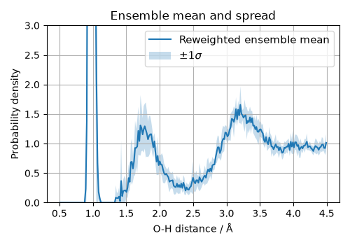
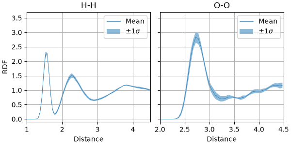
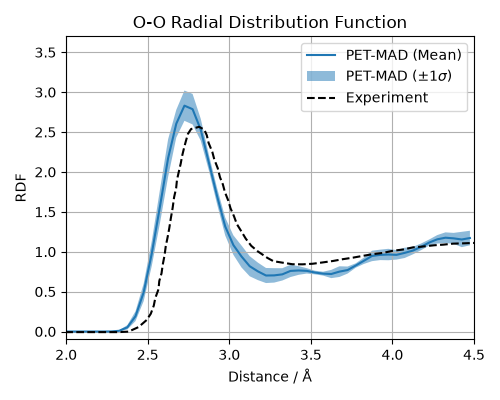
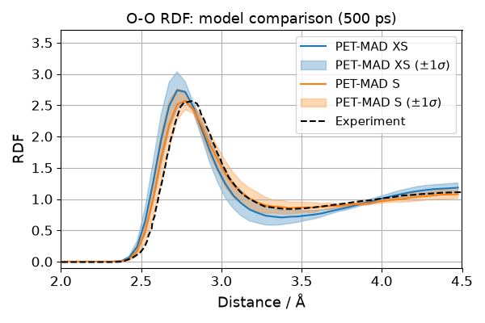

Note
Go to the end to download the full example code.
Uncertainty Quantification with PET-MAD¶
- Authors:
Johannes Spies @johannes-spies, Filippo Bigi @frostedoyster, Matthias Kellner @bananenpampe
This recipe demonstrates three ways of computing errors on the outputs of ML potential-driven simulations, using as an example the PET-MAD model and its built-in uncertainty quantification (UQ) capabilities.
In particular, it demonstrates:
Estimating uncertainties for single-point calculations on a full validation dataset.
Propagating ensemble uncertainty to simple derived quantities, namely vacancy formation energies
Propagating errors from energy predictions to thermodynamic averages computed over a constant-temperature MD simulation.
For more information on PET-MAD, have a look at Mazitov et al., 2025. and Malosso et al., 2026.. The LLPR uncertainties are introduced in Bigi et al., 2024. and last layer ensemble UQ in Kellner et al., 2024.. For more information on dataset calibration and error propagation, see Imbalzano et al., 2021.
The PET-MAD model used here already includes LLPR and last-layer ensemble UQ. To train a custom model with these capabilities from scratch using metatrain, see the Training with LLPR from Scratch example.
Getting Started¶
At the bottom of the page, you’ll find a ZIP file containing the whole example. Note that it comes with an environment.yml file specifying all dependencies required to execute the script.
import os
import subprocess
import upet
from atomistic_cookbook_utils import download_with_retry
import ase.geometry.rdf
import ase.units
import chemiscope
import matplotlib.pyplot as plt
import numpy as np
import torch
from ase import Atoms
from ase.filters import FrechetCellFilter
from ase.io.cif import read_cif
from ase.md.bussi import Bussi
from ase.md.velocitydistribution import (
MaxwellBoltzmannDistribution,
Stationary,
ZeroRotation,
)
from ase.optimize.bfgs import BFGS
from ipi.utils.scripting import InteractiveSimulation
from metatomic.torch import ModelOutput
from metatomic_ase import MetatomicCalculator
from metatrain.utils.data import Dataset, read_systems, read_targets
from metatrain.utils.data.system_to_ase import system_to_ase
/home/runner/work/atomistic-cookbook/atomistic-cookbook/examples/pet-mad-uq/pet-mad-uq.py:68: DeprecationWarning: ipi.utils.scripting has moved to ipi.scripting; update your imports to `from ipi.scripting import ...`. This compatibility shim will be removed in a future release.
from ipi.utils.scripting import InteractiveSimulation
/home/runner/work/atomistic-cookbook/atomistic-cookbook/.nox/pet-mad-uq/lib/python3.12/site-packages/metatomic_ase/_neighbors.py:21: UserWarning: found nvalchemi-toolkit-ops version 0.4.0, this code was only tested with version >=0.3.0,<=0.4.0. If you encounter errors, please update to this version range.
warnings.warn(
Model Loading¶
All examples require a PET-MAD model with ensemble and LLPR prediction.
PET-MAD v1.5.0 includes built-in LLPR uncertainty quantification, so we
can use it directly. Here we use the extra-small (xs) model for speed.
For production calculations, the small (s) model (size="s") is far
more accurate and still very fast.
We use the upet package to download the model, and load it using the
ASE-compatible MetatomicCalculator wrapper, which conveniently hides computing
neighbor lists in the calculator.
model_path = "models/pet-mad-xs-v1.5.0.pt"
os.makedirs("models", exist_ok=True)
upet.save_upet(model="pet-mad", size="xs", version="1.5.0", output=model_path)
calculator = MetatomicCalculator(model_path, device="cpu")
Warning: You are sending unauthenticated requests to the HF Hub. Please set a HF_TOKEN to enable higher rate limits and faster downloads.
WARNING:huggingface_hub.utils._http:Warning: You are sending unauthenticated requests to the HF Hub. Please set a HF_TOKEN to enable higher rate limits and faster downloads.
/home/runner/work/atomistic-cookbook/atomistic-cookbook/.nox/pet-mad-uq/lib/python3.12/site-packages/metatrain/pet/model.py:1428: UserWarning: the 'non_conservative_forces' output name is deprecated, please update the model to use 'non_conservative_force' instead
return AtomisticModel(self.eval(), metadata, capabilities)
/home/runner/work/atomistic-cookbook/atomistic-cookbook/.nox/pet-mad-uq/lib/python3.12/site-packages/metatrain/pet/model.py:1428: UserWarning: the 'non_conservative_forces' output name is deprecated, please update the model to use 'non_conservative_force' instead
return AtomisticModel(self.eval(), metadata, capabilities)
/home/runner/work/atomistic-cookbook/atomistic-cookbook/.nox/pet-mad-uq/lib/python3.12/site-packages/metatrain/llpr/model.py:999: UserWarning: the 'non_conservative_forces' output name is deprecated, please update the model to use 'non_conservative_force' instead
return AtomisticModel(self.eval(), metadata, self.capabilities)
/home/runner/work/atomistic-cookbook/atomistic-cookbook/.nox/pet-mad-uq/lib/python3.12/site-packages/metatomic/torch/model.py:74: UserWarning: the 'non_conservative_forces' output name is deprecated, please update the model to use 'non_conservative_force' instead
return AtomisticModel(model, model.metadata(), model.capabilities())
Uncertainties on a Dataset¶
This first example shows how to use PET-MAD to estimate uncertainties on a reference dataset. We use a reduced subset (100 structures, because of limited compute power in the CI runner) of the MAD 1.5 validation set, which contains r2SCAN references matching the level of theory used to train PET-MAD v1.5.0.
We download the full validation set from Materials Cloud and extract 100 structures with a constant stride. Then, we prepare the dataset and pass it through the model. In the final step, we visualize the predicted uncertainties and compare them to a ground truth method.
if not os.path.exists("data/mad-val-100.xyz"):
mad_val_full = "data/mad-1.5-r2scan-val.xyz"
download_with_retry(
"https://archive.materialscloud.org/records/18tke-tt476/"
"files/mad-1.5-r2scan-val.xyz",
mad_val_full,
)
# Extract 100 structures with constant stride from the full validation set
full_dataset = ase.io.read(mad_val_full, index=":")
stride = max(1, len(full_dataset) // 100)
subset = full_dataset[::stride][:100]
ase.io.write("data/mad-val-100.xyz", subset, format="extxyz")
os.remove(mad_val_full)
# Read the dataset's structures.
systems = read_systems("data/mad-val-100.xyz")
# Read the dataset's targets.
target_config = {
"energy": {
"quantity": "energy",
"read_from": "data/mad-val-100.xyz",
"reader": "ase",
"key": "atomization_energy",
"unit": "eV",
"type": "scalar",
"per_atom": False,
"num_subtargets": 1,
"forces": False,
"stress": False,
"virial": False,
},
}
targets, infos = read_targets(target_config) # type: ignore
# Wrap in a `metatrain` compatible way.
dataset = Dataset.from_dict({"system": systems, **targets})
After preparation, the dataset can be passed through the model using the calculator to obtain energy predictions and LLPR scores.
# Convert the systems to an ASE-native `Atoms` object
systems = [system_to_ase(sample["system"]) for sample in dataset]
outputs = {
# Request the uncertainty in the atomic energy predictions
"energy": ModelOutput(), # (Needed to request the uncertainties)
"energy_uncertainty": ModelOutput(),
"energy_ensemble": ModelOutput(),
}
results = calculator.run_model(systems, outputs)
# Extract the requested results
predicted_energies = results["energy"][0].values.squeeze()
predicted_uncertainties = results["energy_uncertainty"][0].values.squeeze()
ensemble_raw = results["energy_ensemble"][0].values
print(
"energy_ensemble shape:", ensemble_raw.shape
) # (n_structures, n_ensemble_members)
predicted_ensemble_std = ensemble_raw.std(dim=-1).squeeze()
energy_ensemble shape: torch.Size([100, 128])
Compute the true prediction error by comparing the predicted energy to the reference value from dataset.
# Reference values from dataset.
ground_truth_energies = torch.stack(
[sample["energy"][0].values.squeeze() for sample in dataset]
)
# Compute squared distance between predicted energy and reference value.
empirical_errors = torch.abs(predicted_energies - ground_truth_energies)
After gathering predicted uncertainties and computing ground truth error metrics, we can compare them to each other. Similar to figure S4 of the PET-MAD paper, we present the data using a parity plot. The side-by-side panels compare the calibrated LLPR uncertainty (analytical) to the ensemble standard deviation. For more information about interpreting this type of plot, see Appendix F.7 of Bigi et al., 2024. Because we are using a heavily reduced dataset (only 100 structures) from the MAD validation set, the parity plots look very sparse.
quantile_lines = [0.00916, 0.10256, 0.4309805, 1.71796, 2.5348, 3.44388]
_all_data = torch.cat(
[predicted_uncertainties, predicted_ensemble_std, empirical_errors]
)
min_val = float(_all_data[_all_data > 0].min()) * 0.5
max_val = float(_all_data.max()) * 2.0
fig, axes = plt.subplots(1, 2, figsize=(8, 4), sharey=True)
for ax, uncertainty, title, xlabel in [
(axes[0], predicted_uncertainties, "LLPR", "Predicted energy uncertainty / eV"),
(axes[1], predicted_ensemble_std, "Ensemble", "Ensemble standard deviation / eV"),
]:
ax.set(xscale="log", yscale="log", title=title, xlabel=xlabel)
ax.grid()
ax.plot([min_val, max_val], [min_val, max_val], "k--")
for factor in quantile_lines:
ax.plot([min_val, max_val], [factor * min_val, factor * max_val], "k:", lw=0.75)
ax.scatter(uncertainty, empirical_errors, s=10)
axes[0].set_ylabel("Absolute energy error / eV")
fig.tight_layout()

Visualizing uncertainties with chemiscope¶
We can use chemiscope to interactively visualize the structures and their corresponding uncertainties. This allows for an intuitive exploration of which atomic configurations feature larger prediction errors or higher uncertainty.
Below, we pass the same uncertainty and error values that are plotted in the double logarithmic plot to the chemiscope viewer. We use explicit logarithm of the values to reflect the double logarithmic scale directly in the viewer.
chemiscope.show(
systems,
properties={
"ln(LLPR uncertainty / eV)": np.log(predicted_uncertainties.detach().numpy()),
"ln(Ensemble std / eV)": np.log(predicted_ensemble_std.detach().numpy()),
"ln(Empirical error / eV)": np.log(empirical_errors.detach().numpy()),
},
settings={
"map": {
"x": {"property": "ln(LLPR uncertainty / eV)"},
"y": {"property": "ln(Empirical error / eV)"},
"color": {
"property": "ln(Ensemble std / eV)",
"scheme": "inferno",
"log": True,
},
},
"structure": [
{"playbackDelay": 50, "unitCell": True, "bonds": True, "spaceFilling": True}
],
},
)

Uncertainties in Vacancy Formation Energies¶
One can use ensemble uncertainty quantification to estimate the error in predicting vacancy formation energies, which we show in this example.
In this part, we use an aluminum crystal as an example system. The structure file can be downloaded from Material Project as a .cif file. We’ve included such a file with the recipe.
The following code loads the structure, computes the energy before creating a defect, creates a defect, runs a structural optimization, and computes the energy after the optimization. The energy difference can be used to estimate the vacancy formation energy.
# Load the crystal from the Materials Project and create a supercell (not strictly
# necessary).
crystal_structure = "data/Al_mp-134_conventional_standard.cif"
atoms: Atoms = read_cif(crystal_structure) # type: ignore
supercell = atoms * 2
supercell.calc = calculator
N = len(supercell) # store the number of atoms
We now compute the vacancy formation energy by keeping track of the ensemble energies at different stages. Note that calling .get_potential_energy() on an Atoms object triggers computing the ensemble values.
# Get ensemble energy before creating the vacancy
outputs = ["energy", "energy_ensemble"]
outputs = {o: ModelOutput() for o in outputs}
results = calculator.run_model(supercell, outputs)
bulk = results["energy_ensemble"][0].values
# Remove an atom (last atom in this case) to create a vacancy
i = -1
supercell.pop(i)
# Get ensemble energy right after creating the vacancy
results = calculator.run_model(supercell, outputs)
right_after_vacancy = results["energy_ensemble"][0].values
# Run structural optimization optimizing both positions and cell layout.
ecf = FrechetCellFilter(supercell)
bfgs = BFGS(ecf) # type: ignore
bfgs.run()
# get ensemble energy after optimization
results = calculator.run_model(supercell, outputs)
vacancy = results["energy_ensemble"][0].values
Step Time Energy fmax
BFGS: 0 08:17:21 -127.227844 0.252988
BFGS: 1 08:17:21 -127.231949 0.255207
BFGS: 2 08:17:21 -127.262093 0.267220
BFGS: 3 08:17:21 -127.270676 0.266933
BFGS: 4 08:17:21 -127.349586 0.293389
BFGS: 5 08:17:21 -127.383453 0.243959
BFGS: 6 08:17:21 -127.422035 0.058579
BFGS: 7 08:17:21 -127.422516 0.043294
Compute vacancy formation energy for each ensemble member.
vacancy_formation = vacancy - (N - 1) / N * bulk
unrelaxed_formation = right_after_vacancy - (N - 1) / N * bulk
A compact plot helps compare the uncertainty scales of the directly predicted energies and the derived formation energies. We plot them in separate panels because the raw total energies and the formation energies live on very different scales.
defect_energy_samples = [
("Bulk energy", bulk.detach().numpy().squeeze()),
("Unrelaxed vacancy energy", right_after_vacancy.detach().numpy().squeeze()),
("Relaxed vacancy energy", vacancy.detach().numpy().squeeze()),
("Unrelaxed VFE", unrelaxed_formation.detach().numpy().squeeze()),
("Relaxed VFE", vacancy_formation.detach().numpy().squeeze()),
]
for name, values in defect_energy_samples:
print(f"{name}: mean = {values.mean():.6f} eV, std = {values.std(ddof=1):.6f} eV")
Bulk energy: mean = -131.802216 eV, std = 1.237680 eV
Unrelaxed vacancy energy: mean = -127.227844 eV, std = 1.183976 eV
Relaxed vacancy energy: mean = -127.422516 eV, std = 1.250955 eV
Unrelaxed VFE: mean = 0.455554 eV, std = 0.057366 eV
Relaxed VFE: mean = 0.260882 eV, std = 0.098133 eV
fig, axes = plt.subplots(1, 2, figsize=(8, 3.5))
defect_means = np.array([values.mean() for _, values in defect_energy_samples])
defect_stds = np.array([values.std(ddof=1) for _, values in defect_energy_samples])
for ax, selection, title in [
(axes[0], slice(0, 3), "Total energies"),
(axes[1], slice(3, 5), "Formation energies"),
]:
x = np.arange(len(defect_energy_samples[selection]))
ax.errorbar(
x,
defect_means[selection],
yerr=defect_stds[selection],
fmt="o",
capsize=4,
)
ax.set(
xticks=x,
xticklabels=[
label.replace(" ", "\n") for label, _ in defect_energy_samples[selection]
],
title=title,
)
ax.grid(axis="y")
fig.supylabel("Energy / eV")
fig.tight_layout()

Uncertainty Propagation with Python-based MD¶
We now propagate ensemble uncertainty to a thermodynamic observable. We run a short NVT simulation on a box of 32 water molecules, evaluate the ensemble energy for each sampled configuration, and reweight each frame for every ensemble member. As an observable we use the O-H Radial Distribution Function (RDF). Note that computing the RDF uncertainty by linearization or Gaussian error calculus is completely infeasible: the RDF is a highly non-linear functional of the atomic positions, and its sensitivity to the potential parameters cannot be expressed analytically along an MD trajectory.
The motivation for reweighting is efficiency: running a separate trajectory for every committee member would be prohibitively expensive. Instead, we run one trajectory under the mean potential \(\bar{V}\) and then correct each frame in post-processing to estimate what the observable would have been under each individual member \(V^{(i)}\). The spread across members is then a direct measure of the model’s uncertainty on the thermodynamic quantity of interest.
temperature_K = 350.0
water_md = ase.io.read("data/h2o-32.xyz")
water_md.set_cell([9.865916, 9.865916, 9.865916])
water_md.set_pbc(True)
water_md.calc = calculator
MaxwellBoltzmannDistribution(water_md, temperature_K=temperature_K, rng=np.random)
Stationary(water_md)
ZeroRotation(water_md)
integrator = Bussi(
water_md,
timestep=0.5 * ase.units.fs,
temperature_K=temperature_K,
taut=10.0 * ase.units.fs,
)
rdf_edges = np.linspace(0.5, 4.5, 250)
rdf_centers = 0.5 * (rdf_edges[:-1] + rdf_edges[1:])
shell_volumes = 4.0 * np.pi / 3.0 * (rdf_edges[1:] ** 3 - rdf_edges[:-1] ** 3)
oxygen_indices = [i for i, atom in enumerate(water_md) if atom.symbol == "O"]
hydrogen_indices = [i for i, atom in enumerate(water_md) if atom.symbol == "H"]
hydrogen_density = len(hydrogen_indices) / water_md.get_volume()
def oh_distance_distribution(atoms) -> np.ndarray:
distances = atoms.get_all_distances(mic=True)
distances = distances[np.ix_(oxygen_indices, hydrogen_indices)].ravel()
histogram, _ = np.histogram(distances, bins=rdf_edges)
return histogram / (len(oxygen_indices) * hydrogen_density * shell_volumes)
energies = []
sampled_structures = []
def collect_sample() -> None:
sampled_structures.append(water_md.copy())
energies.append(water_md.get_potential_energy())
integrator.attach(collect_sample, interval=2)
integrator.run(1000)
/home/runner/work/atomistic-cookbook/atomistic-cookbook/examples/pet-mad-uq/pet-mad-uq.py:381: DeprecationWarning: Use thermalize_momenta
MaxwellBoltzmannDistribution(water_md, temperature_K=temperature_K, rng=np.random)
/home/runner/work/atomistic-cookbook/atomistic-cookbook/.nox/pet-mad-uq/lib/python3.12/site-packages/ase/atoms.py:1123: UserWarning: Periodic boundary conditions are ignored when calculating the inertial tensor.
warnings.warn('Periodic boundary conditions are ignored '
True
After the simulation, we evaluate the ensemble energy for each frame and compute the O-H RDF.
energies = np.asarray(energies)
ensemble_outputs = {"energy_ensemble": ModelOutput()}
ensemble_energies = np.array(
[
calculator.run_model(atoms, ensemble_outputs)["energy_ensemble"][0]
.values.detach()
.numpy()
.squeeze()
for atoms in sampled_structures
]
)
oh_rdfs = np.array([oh_distance_distribution(atoms) for atoms in sampled_structures])
Direct Thermodynamic Reweighting¶
The key idea is to run a single MD trajectory under the mean committee potential \(\bar{V}\) and then, in post-processing, reweight each sampled frame to obtain averages as if the simulation had been driven by each individual committee member \(V^{(i)}\). Taken together with last layer ensembling, this strategy comes with virtually no additional computational cost, as the additional ensemble energy predictions are computed from last layer readouts, whilst the expensive forces for propagating the dynamics only have to be computed once per timestep.
For a canonical ensemble at temperature \(T = 1/(\beta k_\mathrm{B})\), the reweighted average of an observable \(a\) under potential \(V^{(i)}\) is (Imbalzano et al., 2021, Eq. 22):
This is exact in principle, but its statistical efficiency deteriorates exponentially with the variance of the log-weight \(h^{(i)} \equiv \beta(V^{(i)} - \bar{V})\). Because \(h^{(i)}\) depends on the extensive quantity, the potential energy \(V\), \(\sigma^2(h^{(i)})\) grows linearly with system size — so the statistical error of the reweighted estimator grows exponentially with the number of atoms (Ceriotti et al., 2012).
The O-H RDF uncertainty here is the standard deviation of \(\langle g(r) \rangle_{V^{(i)}}\) across committee members.
beta = 1.0 / (ase.units.kB * temperature_K)
log_weights = -beta * (ensemble_energies - energies[:, None])
log_weights -= log_weights.max(axis=0, keepdims=True)
weights = np.exp(log_weights)
weights /= weights.sum(axis=0, keepdims=True)
reweighted_rdf_by_member = weights.T @ oh_rdfs
reweighted_rdf_mean = reweighted_rdf_by_member.mean(axis=0)
reweighted_rdf_std = reweighted_rdf_by_member.std(axis=0, ddof=1)
fig, ax = plt.subplots(figsize=(5, 3.5))
ax.plot(rdf_centers, reweighted_rdf_mean, label="Reweighted ensemble mean", lw=1.5)
ax.fill_between(
rdf_centers,
reweighted_rdf_mean - reweighted_rdf_std,
reweighted_rdf_mean + reweighted_rdf_std,
alpha=0.25,
label=r"$\pm 1\sigma$",
)
ax.set(
xlabel="O-H distance / Å",
ylabel="Probability density",
title="Ensemble mean and spread",
ylim=(0.0, 3.0),
)
ax.grid()
ax.legend(fontsize=11)
fig.tight_layout()

Uncertainty Propagation with i-PI¶
The same propagation can be performed with i-PI, which supports more advanced MD algorithms and handles the reweighting as a post-processing step. In this example, we use a box with periodic boundary conditions housing 32 water molecules. As an observable, we inspect the Radial Distribution Function (RDF) between hydrogen-hydrogen and oxygen-oxygen bonds.
Cumulant Expansion Approximation (CEA)¶
To sidestep the exponential growth of the statistical error with system size, i-PI uses the Cumulant Expansion Approximation (CEA) by default (Imbalzano et al., 2021, Eq. 24). It replaces the exponential weight by a first-order (linear) expansion in \(h^{(i)} = \beta(V^{(i)} - \bar{V})\):
Two key properties make this approximation attractive:
Statistical stability — the error no longer grows exponentially with system size, because the variance of the linear correction scales only linearly with \(\sigma^2(h^{(i)})\), not exponentially.
Consistency — the CEA mean equals the unweighted committee-trajectory average to first order (Eq. 25 of Imbalzano et al.).
The CEA is reliable when the committee members agree closely (\(\sigma^2(h^{(i)}) \ll 1\)). For non-linear observables such as energy fluctuations or heat capacity, the linearisation breaks down and must be used with care (see Kellner & Ceriotti, 2024, §4.5).
First, we run a simulation with i-PI generating a trajectory and logging other metrics. The trajectory and committee energies can be used in a subsequent postprocessing step to obtain RDFs using ASE. These can be re-weighted to propagate errors from the committee uncertainties to the observed RDFs.
Note also that we set a uncertainty_threshold option in the driver. When running from the command line, this will output a warning every time one of the atomic energy is estimated to have an uncertainty above that threshold (in eV/atom). We have intentionally set it to 100 eV/atom here — a value never reached in practice — to avoid crowding the simulation printout during this tutorial.
# Load configuration and run simulation.
with open("data/h2o-32.xml") as f:
xml_input = f.read()
# prints the relevant sections of the input file
print(xml_input[:883][-334:])
sim = InteractiveSimulation(xml_input)
rue">
<pes>metatomic</pes>
<parameters>
{ template:data/h2o-32.xyz,model:models/pet-mad-xs-v1.5.0.pt,device:cpu,
non_conservative:False,energy_ensemble:True,
check_consistency:False,
uncertainty_threshold:100
}
</parameters>
</ffdirect>
<system>
<initialize nbeads='1'
/home/runner/work/atomistic-cookbook/atomistic-cookbook/.nox/pet-mad-uq/lib/python3.12/site-packages/metatomic/torch/model.py:74: UserWarning: the 'non_conservative_forces' output name is deprecated, please update the model to use 'non_conservative_force' instead
return AtomisticModel(model, model.metadata(), model.capabilities())
@system: Initializing system object
@simulation: Initializing simulation object
@ RANDOM SEED: The seed used in this calculation was 23658
@init_file: Initializing from file data/h2o-32.xyz. Dimension: length, units: angstrom, cell_units: automatic
@init_file: Initializing from file data/h2o-32.xyz. Dimension: length, units: automatic, cell_units: automatic
@init_file: Initializing from file data/h2o-32.xyz. Dimension: length, units: automatic, cell_units: automatic
@init_file: Initializing from file data/h2o-32.xyz. Dimension: length, units: automatic, cell_units: automatic
@init_file: Initializing from file data/h2o-32.xyz. Dimension: length, units: automatic, cell_units: automatic
@initializer: Resampling velocities at temperature 350.0 kelvin
--- begin input file content ---
<simulation verbosity='medium'>
<output prefix='h2o-32'>
<properties filename='out' stride='10'>[ time{picosecond}, temperature{kelvin}, kinetic_md ]</properties>
<trajectory filename='pos' format='ase' stride='10'>positions</trajectory>
<trajectory filename='committee_pot' stride='10' extra_type='committee_pot'>extras</trajectory>
<trajectory filename='atomic_error' stride='10' extra_type='energy_uncertainty'>extras</trajectory>
</output>
<prng>
<seed>23658</seed>
</prng>
<ffdirect name='nocons' pbc='true'>
<pes>metatomic</pes>
<parameters>{ template:data/h2o-32.xyz,model:models/pet-mad-xs-v1.5.0.pt,device:cpu,
non_conservative:False,energy_ensemble:True,
check_consistency:False,
uncertainty_threshold:100
}</parameters>
</ffdirect>
<system>
<initialize nbeads='1'>
<file mode='xyz' units='angstrom'>data/h2o-32.xyz</file>
<velocities mode='thermal' units='kelvin'>350</velocities>
</initialize>
<forces>
<force forcefield='nocons'>
</force>
</forces>
<ensemble>
<temperature units='kelvin'>350</temperature>
</ensemble>
<motion mode='dynamics'>
<fixcom>True</fixcom>
<dynamics mode='nvt'>
<timestep units='femtosecond'>0.5</timestep>
<thermostat mode='langevin'>
<tau units='femtosecond'>50</tau>
</thermostat>
</dynamics>
</motion>
</system>
</simulation>
--- end input file content ---
@system.bind: Binding the forces
Run the simulation.
# NB: To get better estimates, set this to a higher number (perhaps 10000) to
# run the simulation for a longer time.
sim.run(2000)
@simulation.run: Average timings at MD step 0. t/step: 7.47613e-01
@simulation.run: Average timings at MD step 100. t/step: 5.83023e-02
@simulation.run: Average timings at MD step 200. t/step: 5.71291e-02
@simulation.run: Average timings at MD step 300. t/step: 5.91511e-02
@simulation.run: Average timings at MD step 400. t/step: 6.10176e-02
@simulation.run: Average timings at MD step 500. t/step: 6.01277e-02
@simulation.run: Average timings at MD step 600. t/step: 6.13828e-02
@simulation.run: Average timings at MD step 700. t/step: 6.73106e-02
@simulation.run: Average timings at MD step 800. t/step: 6.18622e-02
@simulation.run: Average timings at MD step 900. t/step: 6.16004e-02
@simulation.run: Average timings at MD step 1000. t/step: 6.00523e-02
@simulation.run: Average timings at MD step 1100. t/step: 5.86092e-02
@simulation.run: Average timings at MD step 1200. t/step: 5.89193e-02
@simulation.run: Average timings at MD step 1300. t/step: 5.76928e-02
@simulation.run: Average timings at MD step 1400. t/step: 5.91812e-02
@simulation.run: Average timings at MD step 1500. t/step: 5.93722e-02
@simulation.run: Average timings at MD step 1600. t/step: 5.94238e-02
@simulation.run: Average timings at MD step 1700. t/step: 5.71462e-02
@simulation.run: Average timings at MD step 1800. t/step: 5.74773e-02
@simulation.run: Average timings at MD step 1900. t/step: 5.78896e-02
Load the trajectories and compute the per-frame RDFs. Note that ASE applies an unusual normalization to the partial RDFs, which require a correction to recover the usual asymptotic behavior at large distances. Because the short tutorial run produces very few frames, we apply a light smoothing kernel to reduce noise before reweighting.
frames: list[Atoms] = ase.io.read("h2o-32.pos_0.extxyz", ":") # type: ignore
# Our simulation should only include water molecules. (types: hydrogen=1, oxygen=8)
assert set(frames[0].numbers.tolist()) == set([1, 8])
# Compute the RDF of each frame (for H-H and for O-O)
num_bins = 90
rdfs_hh = []
rdfs_oo = []
xs = None
for atoms in frames:
# Compute H-H distances
bins, xs = ase.geometry.rdf.get_rdf( # type: ignore
atoms, 4.5, num_bins, elements=[1, 1]
)
# smooth the RDF a bit (not enough sampling for smooth RDFs)
bins[2:-2] = (
bins[:-4] * 0.1
+ bins[1:-3] * 0.2
+ bins[2:-2] * 0.4
+ bins[3:-1] * 0.2
+ bins[4:] * 0.1
)
rdfs_hh.append(bins)
# Compute O-O distances
bins, xs = ase.geometry.rdf.get_rdf( # type: ignore
atoms, 4.5, num_bins, elements=[8, 8]
)
bins[2:-2] = (
bins[:-4] * 0.1
+ bins[1:-3] * 0.2
+ bins[2:-2] * 0.4
+ bins[3:-1] * 0.2
+ bins[4:] * 0.1
)
rdfs_oo.append(bins)
rdfs_hh = np.stack(rdfs_hh, axis=0)
rdfs_oo = np.stack(rdfs_oo, axis=0)
Run the i-PI re-weighting utility as a post-processing step.
# Save RDFs such that they can be read from i-PI.
np.savetxt("h2o-32_rdfs_h-h.txt", rdfs_hh)
np.savetxt("h2o-32_rdfs_o-o.txt", rdfs_oo)
# Run the re-weighting tool from i-PI for H-H and O-O
for ty in ["h-h", "o-o"]:
infile = f"h2o-32_rdfs_{ty}.txt"
outfile = f"h2o-32_rdfs_{ty}_reweighted.txt"
cmd = (
f"i-pi-committee-reweight h2o-32.committee_pot_0 {infile} --input"
" data/h2o-32.xml"
)
print("Executing command:", "\t" + cmd, sep="\n")
cmd = cmd.split()
with open(outfile, "w") as out:
process = subprocess.run(cmd, stdout=out)
Executing command:
i-pi-committee-reweight h2o-32.committee_pot_0 h2o-32_rdfs_h-h.txt --input data/h2o-32.xml
Executing command:
i-pi-committee-reweight h2o-32.committee_pot_0 h2o-32_rdfs_o-o.txt --input data/h2o-32.xml
Load and display the RDFs after re-weighting. Note that the results might be noisy due to the small number of MD steps.
# Load the reweighted RDFs.
rdfs_hh_reweighted = np.loadtxt("h2o-32_rdfs_h-h_reweighted.txt")
rdfs_oo_reweighted = np.loadtxt("h2o-32_rdfs_o-o_reweighted.txt")
# Extract columns.
rdfs_hh_reweighted_mu = rdfs_hh_reweighted[:, 0]
rdfs_hh_reweighted_err = rdfs_hh_reweighted[:, 1]
rdfs_oo_reweighted_mu = rdfs_oo_reweighted[:, 0]
rdfs_oo_reweighted_err = rdfs_oo_reweighted[:, 1]
# Display results.
fig, axs = plt.subplots(figsize=(6, 3), sharey=True, ncols=2, constrained_layout=True)
for title, ax, mus, std, xlim in [
("H-H", axs[0], rdfs_hh_reweighted_mu, rdfs_hh_reweighted_err, (1.0, 4.5)),
("O-O", axs[1], rdfs_oo_reweighted_mu, rdfs_oo_reweighted_err, (2.0, 4.5)),
]:
ylabel = "RDF" if title == "H-H" else None
ax.set(title=title, xlabel="Distance", ylabel=ylabel, xlim=xlim, ylim=(-0.1, 3.7))
ax.grid()
ax.plot(xs, mus, label="Mean", lw=0.5)
rdfs_std = (mus - std, mus + std)
ax.fill_between(xs, *rdfs_std, alpha=0.5, label=r"$\pm 1 \sigma$")
ax.legend()

Comparison to Experiment¶
Finally, we plot the simulated, i-PI reweighted O-O RDF against experimental data. This gives the reader a chance to think about what might be missing to converge both distributions entirely on top of each other. The experimental data is taken from Soper (2000) Chemical Physics 258, <https://doi.org/10.1016/S0301-0104(00)00179-8>.
experimental_oo = np.loadtxt("data/OO.csv", delimiter=",")
fig, ax = plt.subplots(figsize=(5, 4))
ax.set(
title="O-O Radial Distribution Function",
xlabel="Distance / $\\mathrm{\\AA}$",
ylabel="RDF",
xlim=(2.0, 4.5),
ylim=(-0.1, 3.7),
)
ax.grid()
# Plot the ML prediction (mean and std)
ax.plot(xs, rdfs_oo_reweighted_mu, label="PET-MAD (Mean)", lw=1.5)
ax.fill_between(
xs,
rdfs_oo_reweighted_mu - rdfs_oo_reweighted_err,
rdfs_oo_reweighted_mu + rdfs_oo_reweighted_err,
alpha=0.5,
label=r"PET-MAD ($\pm 1 \sigma$)",
)
# Plot the experimental data
ax.plot(experimental_oo[:, 0], experimental_oo[:, 1], "k--", label="Experiment", lw=1.5)
ax.legend()
fig.tight_layout()

Eliminating error sources using properly converged simulations¶
This is a good place to discuss potential error sources in the simulation, many of which were introduced by design to keep the example computationally light. In this tutorial, we have a short simulation time, a finite simulation box, the neglect of nuclear quantum effects, and the intrinsic accuracy of the base model.
The two most straightforward to address are simulation length and model size. The precomputed results below used 500 ps (1 000 000 steps) of NVT dynamics for both the PET-MAD XS and S models. The uncertainty bands are the i-PI CEA reweighted ±1σ across the committee.
To switch from XS to S yourself, update the model download call:
upet.save_upet(model="pet-mad", size="s", version="1.5.0", output=model_path)
and the model key in the ffdirect parameters block of data/h2o-32.xml:
{ template:data/h2o-32.xyz, model:models/pet-mad-s-v1.5.0.pt, ... }
On an HPC cluster you might want to run the simulation standalone rather than
through the Python scripting API. Because this input uses ffdirect, all
force evaluation happens in the same process — no separate driver is needed.
Add <total_steps> inside the <motion> block of data/h2o-32.xml:
<motion mode='dynamics'>
<total_steps> 1000000 </total_steps>
...
</motion>
then submit with:
i-pi data/h2o-32.xml
We have included the precomputed RDFs for both the XS and S models, which can be loaded and plotted directly. Here, we load precomputed O-O RDFs for PET-MAD XS and S (500 ps trajectories).
bins_xs = np.load("data/MAD_XS_precompute/rdf_bins.npy")
mean_xs = np.load("data/MAD_XS_precompute/rdf_mean_rdf_o-o.npy")
rew_std_xs = np.load("data/MAD_XS_precompute/rdf_reweighted_std_o-o.npy")
bins_s = np.load("data/MAD_S_precompute/rdf_bins.npy")
mean_s = np.load("data/MAD_S_precompute/rdf_mean_rdf_o-o.npy")
rew_std_s = np.load("data/MAD_S_precompute/rdf_reweighted_std_o-o.npy")
fig, ax = plt.subplots(figsize=(6, 4))
ax.set(xlim=(2.0, 4.5), ylim=(-0.1, 3.7))
ax.tick_params(labelsize=12)
ax.grid()
ax.plot(bins_xs, mean_xs, label="PET-MAD XS", lw=1.5, color="C0")
ax.fill_between(
bins_xs,
mean_xs - rew_std_xs,
mean_xs + rew_std_xs,
alpha=0.3,
color="C0",
label="PET-MAD XS ($\\pm 1\\sigma$)",
)
ax.plot(bins_s, mean_s, label="PET-MAD S", lw=1.5, color="C1")
ax.fill_between(
bins_s,
mean_s - rew_std_s,
mean_s + rew_std_s,
alpha=0.3,
color="C1",
label="PET-MAD S ($\\pm 1\\sigma$)",
)
ax.plot(
experimental_oo[:, 0],
experimental_oo[:, 1],
"k--",
lw=1.5,
label="Experiment",
)
ax.set_xlabel("Distance / $\\mathrm{\\AA}$", fontsize=13)
ax.set_ylabel("RDF", fontsize=13)
ax.set_title("O-O RDF: model comparison (500 ps)", fontsize=13)
ax.legend(fontsize=11)
fig.tight_layout()

We can observe that the computed OO RDF using the S model is in better agreement with the experimental data than the XS model, which is consistent with the improved accuracy of the S model on a reference dataset. The computed uncertainty band of the S model is also slightly narrower than that of the XS model, yet they remain elevated. That suggests that liquid water structures are probably still not perfectly modelled by the S model, and further improvement in confidence may be achieved by finetuning.
Total running time of the script: (3 minutes 23.494 seconds)